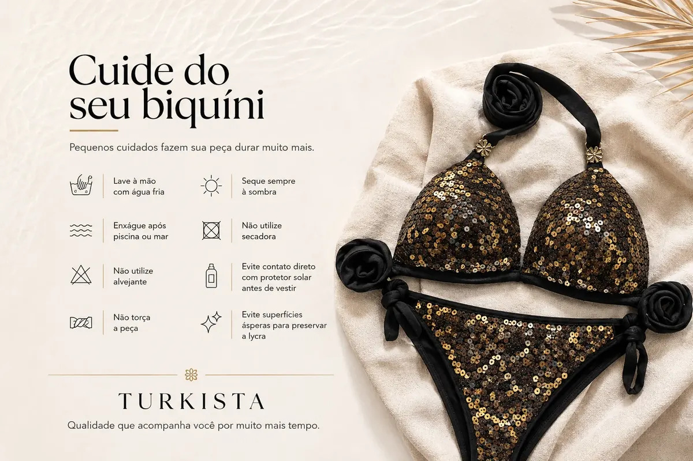

Biquíni com bojo ou sem bojo: diferenças para escolher o seu
Compare estrutura, sensação ao vestir e detalhes de construção para decidir entre um biquíni com bojo ou sem bojo.

A principal diferença entre biquíni com bojo e sem bojo está na estrutura da parte superior. O bojo pode acrescentar formato e cobertura à copa, enquanto os modelos sem bojo costumam ter uma construção mais simples ou flexível. Nenhuma opção é melhor para todas as pessoas: a escolha depende da sensação ao vestir, do formato do top e das características descritas no produto.
Antes de comprar, vale observar mais do que a presença do bojo. O tipo de alça, a faixa abaixo do busto, o tecido, as regulagens e o acabamento também influenciam o caimento.
O que muda no modelo com bojo
O bojo é uma estrutura inserida ou integrada à copa do top. Dependendo da peça, pode ser removível ou fixo e ter diferentes formatos. Por isso, não presuma que todo modelo com bojo oferece o mesmo nível de cobertura ou tem a mesma construção.
Confira se a descrição menciona bojo removível, aro, costuras estruturadas ou outros detalhes. Se você prefere uma peça que mantenha determinado formato, esses dados ajudam a entender o que esperar do produto. O ajuste ainda depende do tamanho e da modelagem escolhidos.
Como é um modelo sem bojo
Os modelos sem bojo não incluem essa estrutura na copa, mas podem variar bastante. Alguns têm tecido duplo ou forro; outros têm recortes, franzidos ou alças que ajudam a definir o formato. Portanto, “sem bojo” não significa necessariamente que a peça seja transparente, pouco estruturada ou igual a todos os outros modelos.
Leia a descrição para confirmar quais elementos fazem parte do top. Observe as fotos e procure informações sobre o forro, a composição e a forma de ajuste, quando fornecidas.
Conforto e preferência pessoal
Pense em como você pretende usar o biquíni. Algumas pessoas preferem a sensação de uma copa estruturada; outras gostam da flexibilidade de um top sem bojo. Experimente avaliar o ajuste com movimentos leves: caminhe, levante os braços e veja se a peça permanece confortável.
Alças que pressionam, uma faixa que sobe constantemente ou uma copa que se desloca podem indicar que outro tamanho ou corte funcionaria melhor. Não é preciso escolher um modelo por causa de expectativas sobre o corpo: priorize sua preferência e a finalidade da peça.
Sustentação não depende apenas do bojo
A presença de bojo, por si só, não garante sustentação adequada. O corte, a largura das alças, a faixa, o fechamento e o tamanho também contam. Um top de amarrar e um modelo com alças fixas podem se ajustar de maneiras diferentes, mesmo que ambos tenham bojo.
Se precisa de um ajuste específico, examine a descrição e tire dúvidas antes de comprar. Não conclua que um modelo é indicado para qualquer atividade apenas pela aparência ou pelo tipo de copa.
O que observar nas fotos e na descrição
Confira o top de frente, de costas e de lado, quando essas imagens estiverem disponíveis. Procure informação sobre bojo removível ou fixo, tipo de alça, fechamento, forro e tamanhos. Se o anúncio mostrar o conjunto completo, confirme se o preço e a venda incluem a calcinha ou apenas a parte superior.
Na loja Turkista, alguns tops são vendidos avulsos. A ficha de cada produto esclarece os itens incluídos e os tamanhos disponíveis; leia esses detalhes antes de concluir a compra.
Perguntas frequentes
### Biquíni com bojo sempre oferece mais sustentação? Não necessariamente. A sustentação depende do conjunto da construção, do ajuste, das alças e da faixa, além do bojo.
### O bojo pode ser removível? Depende do modelo. Confirme essa característica na descrição do produto.
### Biquíni sem bojo tem menos cobertura? Não é uma regra. Cobertura e estrutura variam conforme o corte, o tecido e o acabamento.
### Como saber se o tamanho está correto? Observe se o top permanece no lugar sem apertar ou escorregar e consulte a tabela de medidas quando houver.
### Qual opção devo escolher? Escolha a que oferece o ajuste, o visual e a sensação que você prefere. Compare os detalhes de cada modelo, em vez de decidir apenas pelo nome.
Bojo ou ausência de bojo é apenas um dos critérios de escolha. A descrição do produto, a modelagem e o conforto devem orientar a decisão final.
Explore peças relacionadas
Ficou com dúvida sobre uma peça?
Fale com a Turkista pelo WhatsApp para confirmar informações antes de escolher.
Falar no WhatsAppMais da Revista Turkista
Como escolher biquíni feminino: modelos, caimento e estilo
Compare modelos, ajuste, conforto e combinações para escolher um biquíni que faça sentido para seu estilo e para o uso que você pretende dar à peça.
Ler artigoEstiloTop de biquíni avulso: como combinar a parte de cima com a calcinha
Aprenda a coordenar tops e calcinhas de biquíni avulsos usando cores, estampas, texturas e modelagens para criar combinações pessoais.
Ler artigoEstiloBiquíni dupla face: como funciona e por que vale conhecer esse modelo
Entenda o que caracteriza um biquíni dupla face, como variar o visual e quais cuidados ajudam a preservar a peça.
Ler artigo